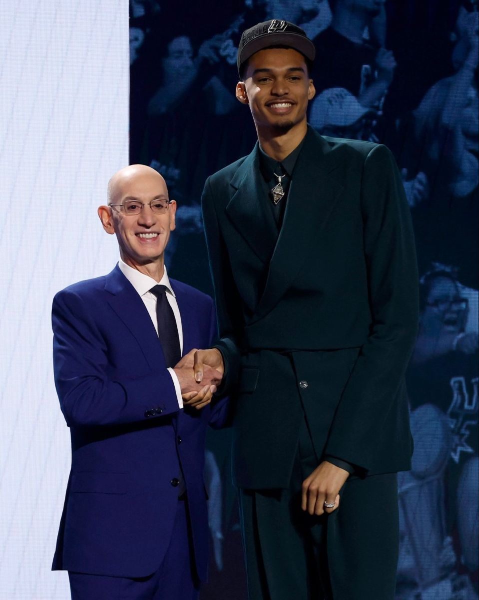

June 22, 2023 | Barclays Center, Brooklyn

On June 22, 2023, Victor Wembanyama's dream became reality when NBA Commissioner Adam Silver announced his name as the first overall pick in the 2023 NBA Draft. The San Antonio Spurs selected the 7-foot-4 French phenom, marking the beginning of a new era for the storied franchise.
The atmosphere at Barclays Center was electric as Wembanyama walked onto the stage, donning the iconic Spurs cap and holding up the team's jersey with his name and number 1 on the back. This moment represented years of hard work, dedication, and an unprecedented rise through the ranks of international basketball.
Leading up to the draft, Wembanyama was universally recognized as a generational talent. Scouts and analysts compared him to the greatest centers in NBA history, with his unique combination of size, skill, and athleticism drawing comparisons to players like Kevin Durant, Rudy Gobert, and Kristaps Porzingis.
ESPN's draft experts gave him near-perfect grades across all categories, and his two exhibition games against the G League Ignite in October 2022 only solidified his status as the consensus number one pick.
Gregg Popovich (Spurs Head Coach): "Victor is a once-in-a-generation talent. We're thrilled to welcome him to San Antonio and can't wait to see what he'll accomplish in a Spurs uniform."
Victor Wembanyama: "This is a dream come true. I've always admired the Spurs organization and their winning culture. I'm ready to work hard and help bring another championship to San Antonio."